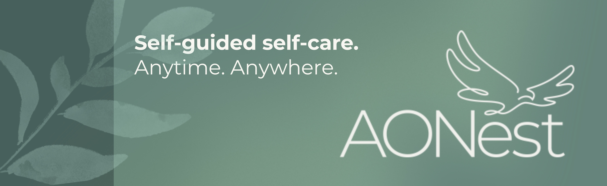

Building AONest at Anishnabeg Outreach

From Content Production to Digital Strategy
My work with AONest began in content production, where I helped transform unbranded course materials into a consistent, polished learning experience. AONest is Anishnabeg Outreach’s self-guided mental health software designed to support First Nations, Inuit, and Métis people through reconciliation-based outcomes, including healing, employment readiness, and personal growth.
I started by applying brand guidelines across fillable worksheets, presentation materials, and video content to create a more unified visual identity. As the project grew, my role expanded from design support into full content production, including editing course videos in Canva and recording voiceovers in FL Studio.
After beginning alongside a group of student contributors, I was kept on the team beyond the summer and continued building AONest’s content library. Over time, I contributed to more than 1,000 hours of learning content, including worksheets, video presentations, and self-guided resources created to improve mental health outcomes and support pathways toward employment.

Expanding Into Communications and Community Rollout
As AONest moved from content development toward community use, I became more involved in the rollout process and the storytelling behind the platform. This included helping communicate AONest’s value to partners, supporting onboarding-related communications, and seeing its early impact through pilot work with community partners such as oneROOF.
Being part of this stage helped me better understand how digital tools can create real outcomes when they are designed around community needs. AONest was not just a content library or software platform. It was a way to connect mental health education, personal development, and reconciliation-focused support in a format that people could access at their own pace.

.jpg)
.jpg)
.jpg)
 (4).jpg)
Building a Broader Digital Media Role
My role continued to expand beyond AONest into digital media and communications across Anishnabeg Outreach. I designed graphics, calendars, and social media content for Anishnabeg Outreach, EarlyON, and AONest, while also capturing photography and creating video reels to help share the organization’s programs and impact online.
I also supported Anishnabeg Outreach’s broader digital operations, including HubSpot email copy and workflows for Spirit Bundle participants, family sign-ups, and program communications. Through this work, I helped support communications for bi-weekly food hamper programming, participant tracking, and community updates.
In addition, I contributed to the development of a new AO website by creating graphic content, capturing photos, and helping shape how the organization presents its programs, services, and reconciliation work online.

Outcome
What began as a design and content role grew into a broader digital media and marketing position. Through AONest and my work at Anishnabeg Outreach, I built experience across content production, brand consistency, software rollout, social media strategy, photography, video, email marketing, website development, and community-focused storytelling.
This experience gave me the opportunity to combine creativity, technical skill, and data-informed communication while contributing to work focused on healing, employment, and reconciliation-based outcomes for First Nations, Inuit, and Métis communities.